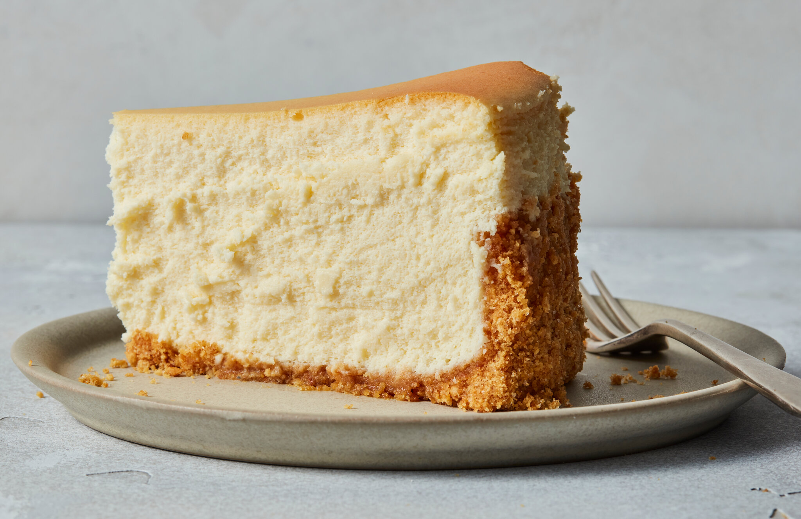

Delicious and Easy Cheesecake

We all Love a Good Cheesecake
If you're looking for a dessert that is rich, creamy, and absolutely indulgent, look no further than cheesecake! This dessert is perfect for any occasion, from a fancy dinner party to a cozy night in with loved ones. The velvety smooth texture of the cream cheese filling paired with the crumbly, buttery crust is simply irresistible. Whether you prefer your cheesecake topped with fresh fruit, drizzled with chocolate sauce, or simply enjoyed plain, one bite is sure to have you hooked. So, get ready to fall in love with cheesecake all over again with this delicious recipe!
Below, I share with you all you need for a Damn Good Cheesecake.
You Will Need the Following:
- nonstick cooking spray, for greasing
- 7 oz graham cracker(200 g)
- 2 cups sugar(400 g), plus 1 tablespoon, divided
- 5 tablespoons unsalted butter, melted
- 32 oz cream cheese(905 g), room temperature
- ½ cup heavy cream(120 mL)
- 2 cups sour cream(460 g)
- 5 tablespoons all-purpose flour
- 1 pinch kosher salt
- 1 vanilla bean
- 4 large eggs
- boiling water, for baking
- mixed berry, for serving
And Here's How to Make Them
- Preheat the oven to 350˚F (180˚C). Grease a 10-inch (25 cm) springform pan with nonstick spray. Line the inside edges of the pan with parchment paper.
- In the bowl of a food processor, combine the graham crackers, 1 tablespoon of sugar, and the melted butter. Pulse to combine until the texture is similar to wet sand.
- Press the graham cracker crumbs into the prepared pan, using a measuring cup to compact in even layer.
- Bake for 8-10 minutes, until golden brown. Transfer to a wire rack and let cool to room temperature.
- Once cool, line the sides of the springform pan with parchment paper.
- In a large bowl, combine the cream cheese, remaining 2 cups (400 G) of sugar, and the salt. Using an electric hand mixer, blend until well-combined and fluffy.
- Add the heavy cream and beat to incorporate.
- Add the sour cream, flour, salt, and vanilla bean seeds, and beat to combine.
- Add the eggs, 1 at a time, and mix until fully combined, making sure not to over-beat. The mixture should be smooth and creamy.
- Pour the cream cheese mixture into the cooled crust.
- Wrap the outside of the springform pan tightly with foil and place the pan in a large baking dish. Fill the dish with 1 inch (2 cm) of boiling water.
- Gently transfer the baking dish to the oven and bake for 1 hour.
- Without opening the oven door, turn off the heat and let the cheesecake rest for 1 hour.
- Remove the springform pan from the baking dish and unwrap the foil. Run a paring knife gently around the outside of the cheesecake to loosen it from the sides of the pan.
- Cover the pan with plastic wrap and transfer to the refrigerator overnight.
- Remove the cheesecake from the refrigerator and release the springform pan. Remove the parchment paper lining.
- Top with fresh berries, if desired.
- Dip a knife into hot water for clean slices, then slice and serve.
Enjoy!